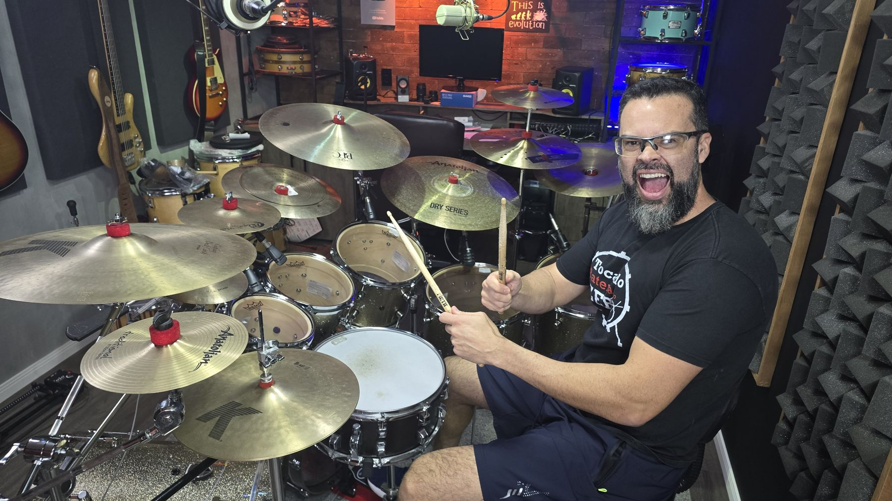
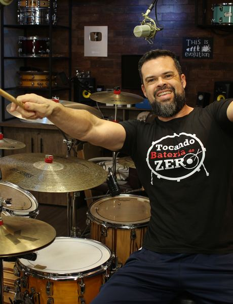
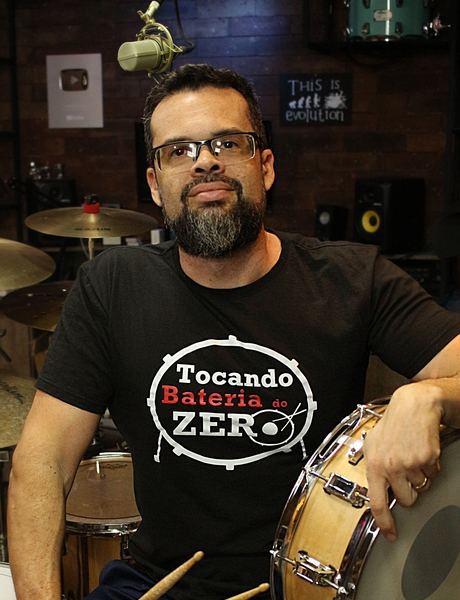
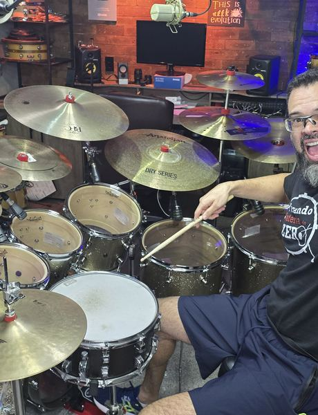
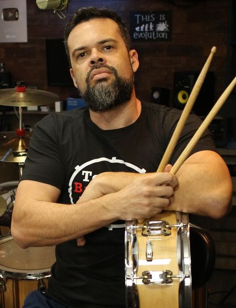
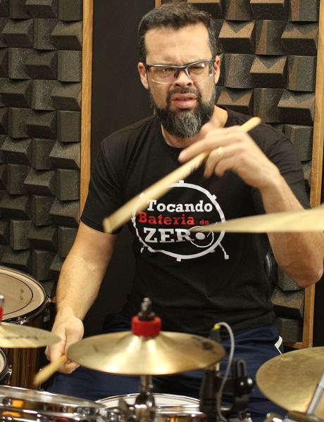
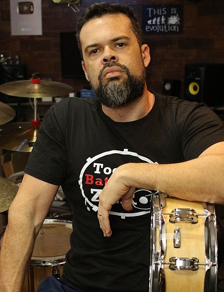
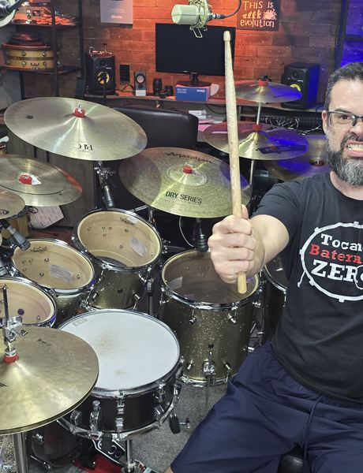
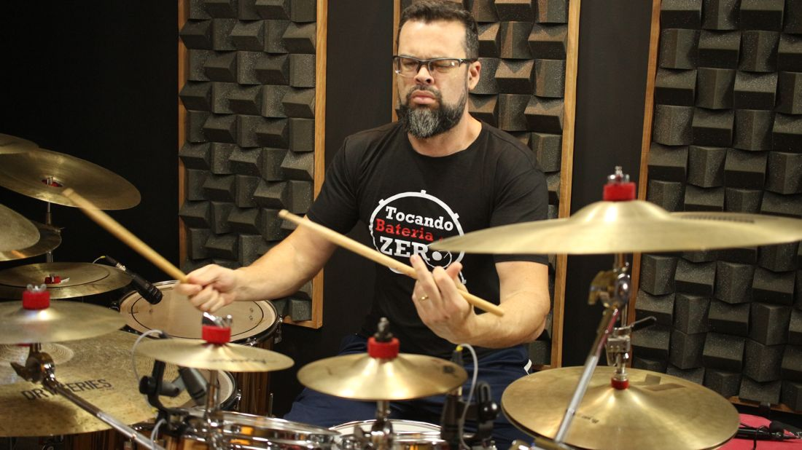

01F
Fundamentos
Ritmos, viradas, partitura, rudimentos e técnica de mãos e pés.


Do primeiro toque na baqueta às viradas lineares e ao gospel chops: videoaulas em ordem, partitura em PDF, MP3 para aplicar e correção dos seus vídeos feita por mim, direto.
Você já assistiu dezenas de vídeos de bateria. Aprendeu uma virada aqui, um ritmo ali. Mas na hora do culto trava: a virada não entra no tempo, o andamento corre, e a dinâmica não acompanha o momento da música.







Não é falta de talento. É falta de sequência. Ninguém aprende a tocar juntando pedaços fora de ordem — aprende seguindo um caminho, do primeiro toque até o avançado.
Sabe alguns ritmos, mas não consegue tirar uma música inteira sozinho.
A virada sai, mas você perde o tempo quando volta pro ritmo.
Coordenação entre mãos e pés ainda é o seu maior obstáculo.
Sua igreja precisa de baterista e você quer estar pronto para servir.
Nunca leu uma partitura de bateria e acha que isso é para poucos.
Já tentou escola de música e sentiu que evoluiu pouco perto do que investiu.
O Tocando Bateria do Zero é dividido em cursos: cada um resolve uma peça da sua evolução — ritmos, viradas, rudimentos, técnicas de mão, técnica de pés, dinâmicas, partitura, tribais, worship, gospel chops, afinação. Você começa pelo que precisa agora e vai somando.
A confirmarEspaço reservado: trocar pelo mockup real da área de membros no celular.
Nada de teoria solta. Você toca no primeiro dia e aplica em música de verdade na primeira semana.
Explicação clara, passo a passo, no ritmo de quem está aprendendo — o motivo número 1 pelo qual meus alunos compram e voltam.
Você grava o exercício, me envia e eu analiso e corrijo. Não é equipe, não é IA, não é fórum. Sou eu.
Cada curso gravado do começo ao fim, em sequência — sem pular etapa.
O material escrito de tudo o que você toca na aula, pronto para imprimir e estudar.
As músicas para você aplicar o que aprendeu.
A confirmarDisponível em cursos selecionados — falta a lista de quais cursos incluem MP3.Você pergunta e eu respondo. Sem fila, sem atendente.
Grave o exercício, me envie e eu aponto exatamente o que ajustar — postura, tempo, dinâmica. É a parte que mais acelera a evolução do aluno.
São 34 cursos que cobrem a formação completa de um baterista. Cada um pode ser comprado separadamente — ou você leva tudo de uma vez no pacote completo.
Ritmos, viradas, partitura, rudimentos e técnica de mãos e pés.
Dinâmicas, metrônomo, duas mãos no chimbal e ritmos na caixa.
Viradas lineares, aplicação de rudimentos e os 60 grooves.
Bateria e viradas no louvor, worship e Hinos da Harpa.
Rock, forró, reggae e tribais.
Afinação de bateria.
A confirmarLista e nome comercial de cada curso a validar com o Mateus.
Boa parte dos alunos aprende os ritmos já na primeira aula e toca a primeira música na primeira semana. Cada pessoa tem o seu tempo — alguns levam um pouco mais. Mas todos que seguem o método chegam lá. A virada de chave costuma acontecer nos primeiros meses, e muitos já sentem diferença nas primeiras semanas.
Aluno aprendeu a primeira música completa.
Aluno tocou na igreja pela primeira vez.
Aluno aprendeu o que não tinha aprendido em meses de escola de música.
Resultados relatados por alunos. O tempo de evolução varia de pessoa para pessoa.
A confirmarAutorização dos alunos para publicar os prints das conversas.
A formação inteira, do primeiro toque ao avançado: todos os cursos, todos os PDFs com partitura, os MP3 de aplicação e o suporte direto comigo.
De R$ 1.305,00 por
Pagamento na Hotmart, Pix ou cartão direto comigo.
A confirmarParcelamento oferecido na Hotmart. Quero o pacote completo A confirmarLink de checkout da Hotmart.R$ 15,00 de desconto
R$ 60,00 de desconto
R$ 10,00 de desconto em cada curso
Escolha o curso que resolve o seu problema de agora: videoaulas, PDF com partitura e suporte direto comigo. A confirmarPreço unitário do curso avulso.
Entendo — e é por isso que você não precisa começar por ele. Escolha um curso, veja se a minha didática funciona para você e vá somando. Quem leva mais cursos paga menos por cada um.
Comprou, entrou, assistiu, baixou as partituras e treinou. Se em 7 dias você achar que não é para você, pede o reembolso na Hotmart e devolvemos tudo. Sem burocracia.
Começar sem risco
Toco bateria há 29 anos e dou aula há 25. O Tocando Bateria do Zero existe há 10 anos, e começou no YouTube com um objetivo simples: ensinar quem nunca tinha encostado numa baqueta a tocar de verdade.
De lá pra cá, mais de 12.500 alunos passaram pelos meus cursos on-line. E todo o suporte continua passando por mim: sou eu que respondo as dúvidas, assisto aos vídeos que os alunos me mandam e corrijo.
Meu propósito é esse: ensinar bateria de forma prática, clara e financeiramente acessível.
Comece hoje pelo primeiro ritmo. Em uma semana você já está tocando música. E eu estou do outro lado para corrigir o que precisar.